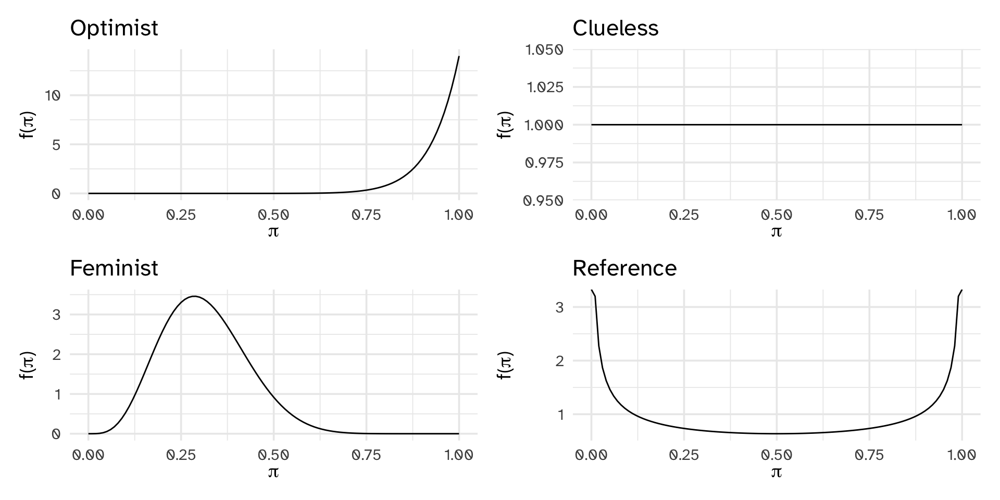

Balance and Sequentiality
Day 05
Carleton College
Stat 340 - Fall 2025
Key ideas
- Different priors, different posteriors
- Different data, different posteriors
- Sequential analyses
- Data order is invariant
- Don’t be stubborn
Bechdel test
Alison Bechdel’s 1985 comic Dykes to Watch Out For has a strip called The Rule where a person states that they only go to a movie if it satisfies the following three rules:
- the movie has to have at least two women in it;
- these two women talk to each other; and
- they talk about something besides a man.
This test is used for assessing movies in terms of representation of women. Even though there are three criteria, a movie either fails or passes the Bechdel test.
Priors
Terminology
Informative Prior
An informative prior reflects specific information about the unknown variable with high certainty (ie. low variability).
Diffuse prior
A vague or diffuse prior reflects little specific information about the unknown variable. A flat prior, which assigns equal prior plausibility to all possible values of the variable, is a special case.
Reference prior
A formal type of diffuse prior
“There is no objective, unique prior that represents ignorance. Instead, reference priors are chosen by public agreement, much like units of length and weight. In this interpretation, reference priors are akin to a default option in a computer package. We fall back to the default when there is insufficient information to otherwise define the prior.” Kass & Wasserman
Flat prior
\[\pi \sim \text{Unif}(0,1)\]

Under re-parameterization (\(\theta = g(\pi)\)) \(\theta\) might have a non-uniform distribution
Jeffrey’s prior
\(\pi \propto \sqrt{I(\pi)}\)
where \(I(\pi)\) is the Fisher Information. For binomial data, Jeffrey’s prior gives \(\pi \sim\)
Bernardo’s reference prior
- Prior should influence posterior as little as possible
- Posterior should be (on average) very different from the posterior
- We can measure “difference” between distributions \(P\) and \(Q\) with the Kullback-Leibler divergence
- \(KL(P,Q) = \int_{-\infty}^\infty p(x) \log \frac{p(x)}{q(x)} dx\)
- So, choose reference prior by maximizing KL divergence between prior and posterior
- Lucky for us, if we have univariate model, this is equivalent to Jeffrey’s prior
Priors
Data
library(bayesrules)hasbechdeldata frame. Randomly select 20 movies from this dataset (seed = 84735)Based on observed data, update the posterior
Plot the prior, likelihood, and the posterior
Data
| year | title | binary |
|---|---|---|
| 2005 | King Kong | FAIL |
| 1983 | Flashdance | PASS |
| 2013 | The Purge | FAIL |
| 2001 | American Outlaws | FAIL |
| 2010 | Sex and the city 2 | PASS |
| 1997 | Air Bud | FAIL |
| 2010 | Robin Hood | FAIL |
| 2009 | Case 39 | PASS |
| 1998 | Hope Floats | PASS |
| 2007 | The Golden Compass | PASS |
| 2013 | Parker | PASS |
| 1971 | Shaft | FAIL |
| 2011 | Fast Five | PASS |
| 2013 | The Croods | FAIL |
| 2010 | Edge of Darkness | FAIL |
| 1998 | Mulan | FAIL |
| 2010 | Easy A | PASS |
| 2000 | Memento | FAIL |
| 2002 | The Tuxedo | FAIL |
| 1982 | The Best Little Whorehouse in Texas | PASS |
binary n percent
FAIL 11 0.55
PASS 9 0.45Posteriors
Different data, different posteriors
Let’s compare results for 3 analyses: 1 using 1991 movies, 1 using 2000 movies, and 1 using 2013 movies
binary n percent
FAIL 7 0.5384615
PASS 6 0.4615385 binary n percent
FAIL 34 0.5396825
PASS 29 0.4603175 binary n percent
FAIL 53 0.5353535
PASS 46 0.4646465Different data, different posteriors
Prior updating/sequential data
Data order invariance
Updating the prior 20 times:
model alpha beta mean mode var sd
1 prior 551 613 0.4733677 0.4733219 0.0002139835 0.01462817
2 posterior 612 681 0.4733179 0.4732765 0.0001926492 0.01387981“Data dump”: treat years 1-20 as the data
model alpha beta mean mode var sd
1 prior 1 1 0.5000000 NaN 0.0833333333 0.28867513
2 posterior 612 681 0.4733179 0.4732765 0.0001926492 0.01387981Further reading: How to think like an epidemiologist
Data order invariance (math)
Don’t be stubborn
Warning
The posterior is defined on the same values as the prior. Do not assign \(f(\pi) = 0\) on any reasonable value!